Week 03 — Online · AI × Industrial Design
AI PRODUCT
VISUALIZATION
From Design Decisions
to Consistent Product Images
하나의 제품을 다양한 이미지로 표현하되,
제품의 디자인은 일관되게 유지합니다.
심선범 · Higgsfield Live Session · 180 min
PART 01 — Reference & Design Constraints
Where We Are
FROM DESIGN TO VISUALIZATION

WEEK 01
Explore the concept.
WEEK 02
Refine the form.
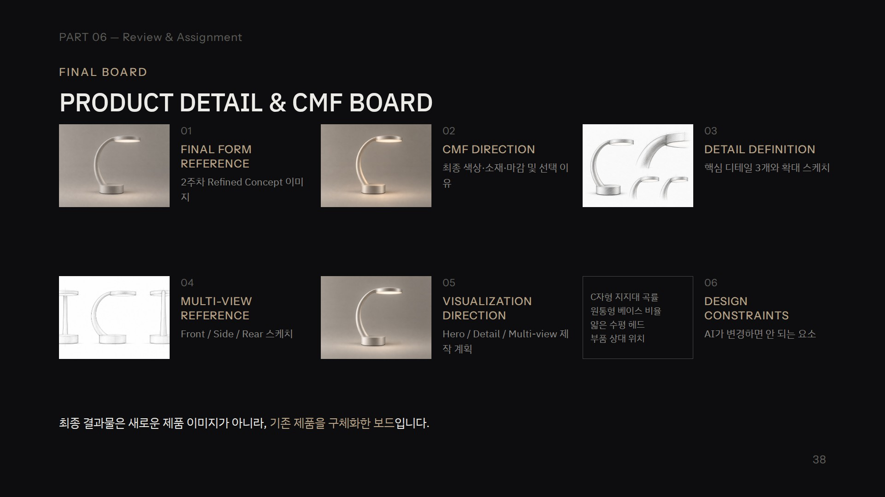
WEEK 03 OFFLINE
Define the details.
TODAY
WEEK 03 ONLINE
Visualize the decisions.
이전 수업에서는 제품을 어떻게 디자인할 것인지 결정했습니다.
이번 수업에서는 이미 결정한 디자인을 AI로 정확하게 표현하는 방법을 연습합니다.
2
PART 01 — Reference & Design Constraints
Input · Product Detail & CMF Board
START WITH DESIGN DECISIONS
01
FINAL FORM REFERENCE
기준 제품 이미지

02
CMF DIRECTION
색상·소재·마감 사양

03
DETAIL DEFINITION
디테일 확대 스케치

04
MULTI-VIEW REFERENCE
시점별 형태 스케치
Hero View
Detail × 3
Front / Side / Rear
05
VISUALIZATION DIRECTION
필요한 이미지와 표현 목적
C자형 지지대 곡률
원통형 베이스 비율
얇은 수평 헤드
06
DESIGN CONSTRAINTS
변경하면 안 되는 요소
AI에 무엇을 만들지 맡기지 말고, 이미 결정한 디자인을 전달합니다.
실습 · 자신의 Product Detail & CMF Board를 준비하고 누락된 자료를 확인합니다.
3
PART 01 — Reference & Design Constraints
Keep · Change · Constraint
CONTROL WHAT CHANGES
AI 이미지 편집 요청은 세 가지로 나눠 씁니다 · 램프 예시
KEEP
유지할 디자인 요소
C-shaped support, cylindrical base,
circular lamp head
CHANGE
이번 작업에서 변경할 요소
Body color → Charcoal
CONSTRAINT
변경해서는 안 되는 조건
No geometry changes,
no new components
프롬프트에서 가장 중요한 것은 변경할 내용뿐 아니라 유지할 내용을 명확하게 지정하는 것입니다.
4
Practice 01
Reference Setup
기준 이미지와 디자인 조건을 고정합니다.
학생 실습
01
기존 제품 이미지를 Higgsfield에 업로드
02
CMF Direction 확인
03
Detail Sketch 준비
04
Multi-view Sketch 준비
05
KEEP / CHANGE / CONSTRAINT 작성
결과물
Master Reference + Design Constraints
INSTRUCTOR DEMO · MASTER CONSTRAINT
입력 이미지: 기존 램프
Use the uploaded lamp image
as the primary and authoritative design reference.
Preserve the original product identity:
- Low cylindrical base
- One continuous C-shaped support
- Thin horizontal circular lamp head
- Warm light diffuser
- Original proportions and silhouette
Do not create a new lamp design.
Only change elements explicitly requested.
Preserve all unrelated features.
Do not add components unless specified.
5
PART 02 — CMF Application
CMF Is Not a Redesign
CHANGE THE SURFACE, NOT THE FORM
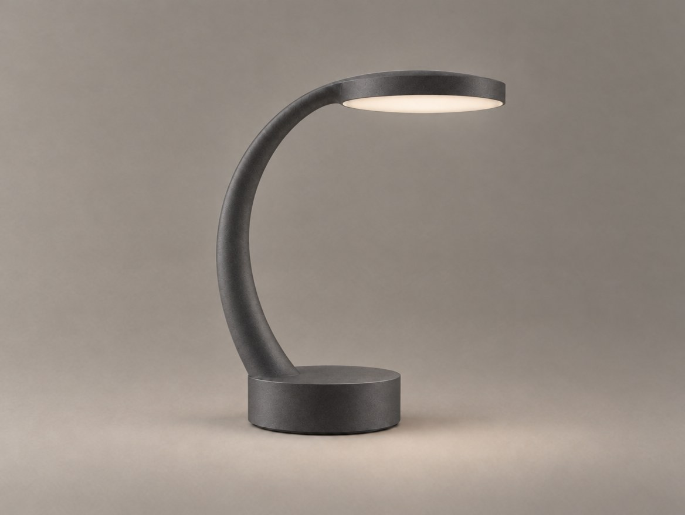
ORIGINAL
CMF ONLY
CMF 변경
색상 · 소재 표현 · 표면 마감 · 반사 특성
제품 재설계
01
실루엣 변경
02
지지대 곡률 변경
03
헤드 두께 변경
04
베이스 비율 변경
05
부품 추가
CMF를 수정하면서 제품의 형태까지 바뀌었다면 의도한 작업이 아닙니다.
6
PART 02 — CMF Application
Color Control
CHANGE ONLY THE COLOR
HIGGSFIELD PROMPT — COLOR CHANGE
입력 이미지: 기존 램프
Use the uploaded original lamp image.
Change only the visible metal body color
to deep charcoal gray.
Preserve the original material appearance
and surface finish.
Keep the exact C-shaped support curvature,
cylindrical base,
thin horizontal circular lamp head,
warm light diffuser,
and original proportions.
Keep the same camera angle,
lighting, and background.
Do not redesign the lamp.
Do not add any components.
→
BEFORE
AFTER · CHARCOAL
시연 후 확인
01
색상만 바뀌었는가?
02
지지대 곡률이 유지되었는가?
03
헤드 두께가 달라지지 않았는가?
04
조명 확산판이 그대로 유지되었는가?
7
PART 02 — CMF Application
Material Control
MAKE MATERIALS BELIEVABLE
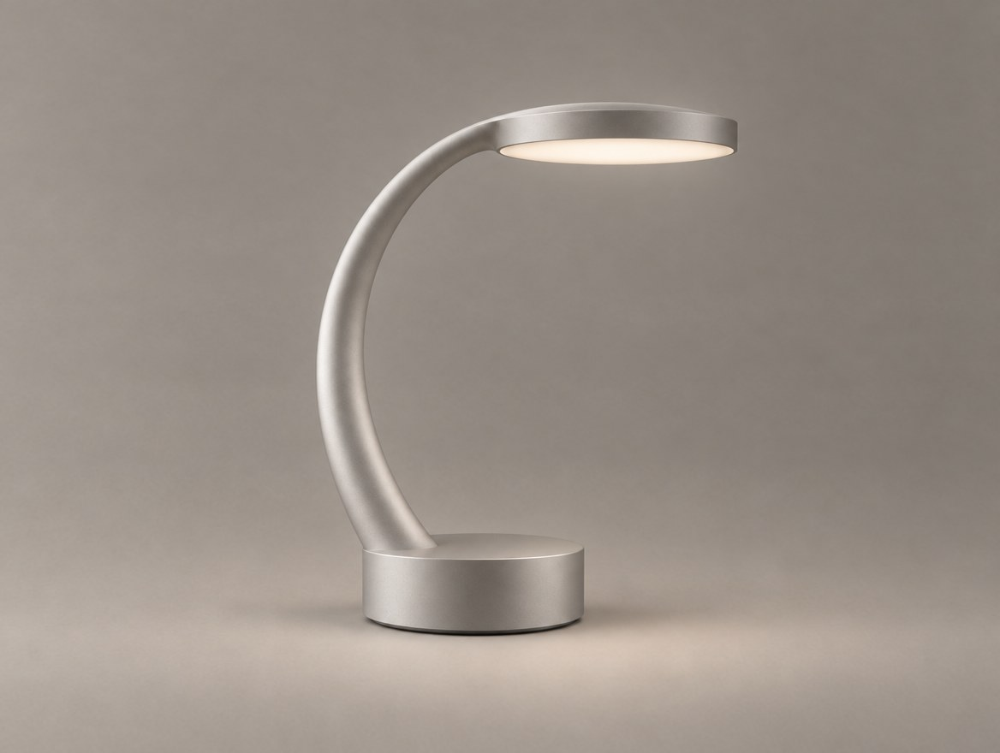
COLOR
Charcoal Gray — 색상 정보
MATERIAL
Matte Anodized Aluminum — 소재·마감 정보
소재는 색으로만 표현하지 않습니다.
표면의 반사와 질감까지 함께 지정합니다.
HIGGSFIELD PROMPT — MATERIAL APPLICATION
입력 이미지: 기존 램프
Use the uploaded lamp as the design reference.
Apply a realistic matte anodized aluminum
material appearance to the visible metal body.
Preserve the existing product color family,
geometry, proportions, and components.
Show subtle metallic surface response
with soft controlled reflections.
Keep the original warm light diffuser.
Do not change the product design.
8
PART 02 — CMF Application
Finish Control
MATTE vs SATIN vs BRUSHED
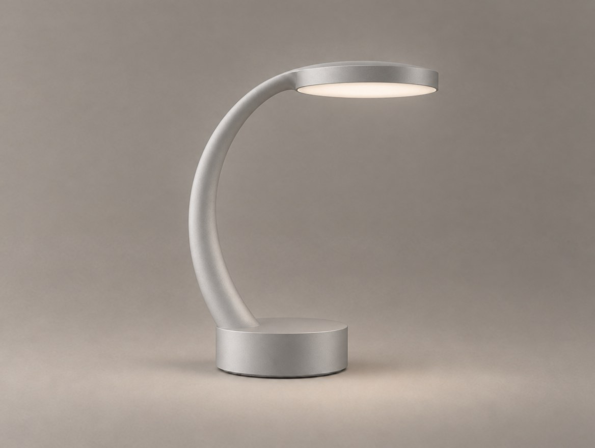
A. MATTE
PROMPT — MATTE
Apply a uniform matte aluminum finish
to the existing lamp body.
Preserve the original geometry,
color, components, and proportions.
Reduce strong specular reflections.
Keep realistic soft surface highlights.
Change only the surface finish.
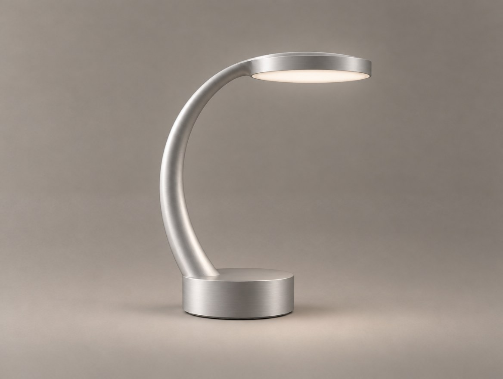
B. SATIN
PROMPT — SATIN
Apply a refined satin aluminum finish
to the existing lamp body.
Preserve the original geometry,
color, components, and proportions.
Show soft controlled metallic reflections.
Change only the surface finish.
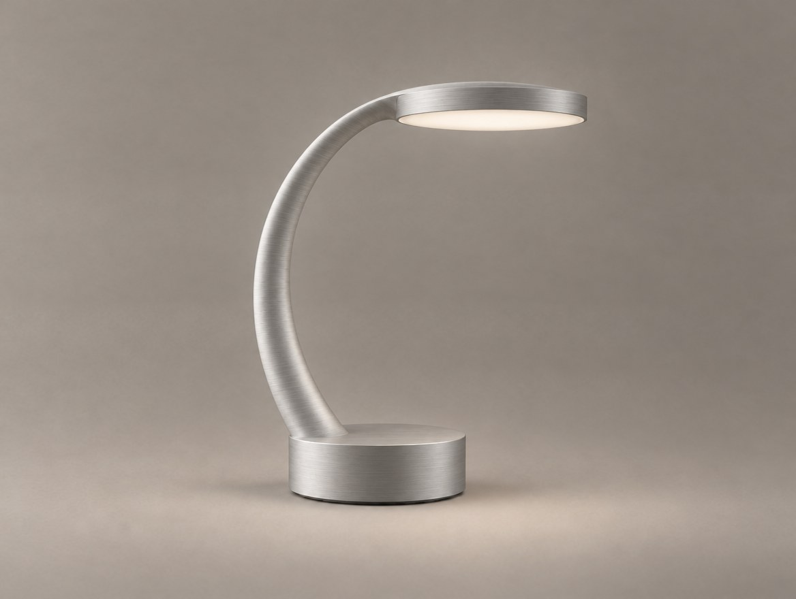
C. BRUSHED
PROMPT — BRUSHED
Apply a subtle fine-brushed aluminum finish
to the existing lamp body.
Preserve the original geometry,
color, components, and proportions.
Show realistic fine directional surface texture.
Change only the surface finish.
9
PART 02 — CMF Application
CMF Consistency Check
DID ONLY THE CMF CHANGE?
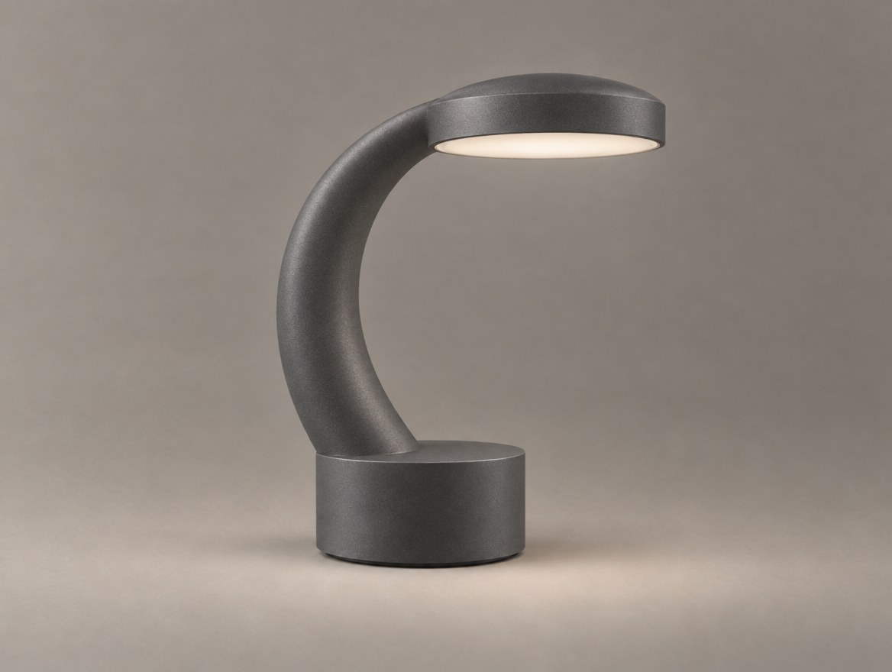
FAIL · 형태 변경
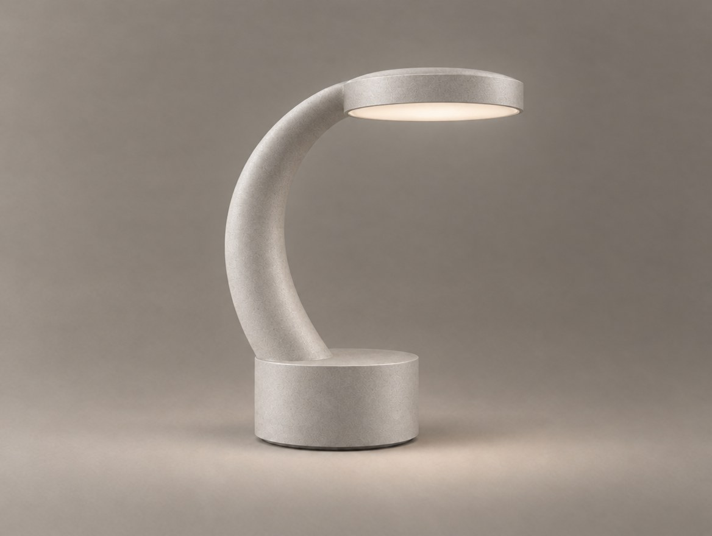
1차 수정
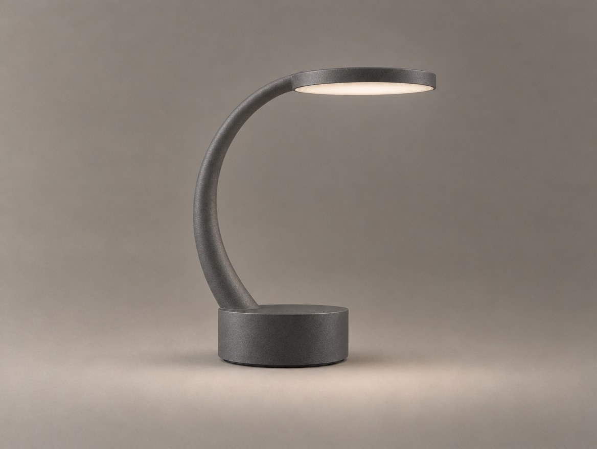
2차 수정 · 완료
실패 사례 색상만 바꾸라고 했는데 지지대가 두꺼워지고, 헤드가 둥글게 부풀고, 베이스가 높아짐.
1차 수정 형태 일부는 돌아왔지만 지지대가 여전히 두껍고 Charcoal CMF까지 사라짐.
2차 수정 이미지 역할과 고칠 부분을 구체적으로 지정 → 형태 복원 + CMF 유지.
검토 기준
실루엣 · 비율 · 부품 구성 · 색상 정확성 · 소재 · 마감 · 조명 확산판
HIGGSFIELD PROMPT — CORRECTION
입력: 실패 결과 + 기존 램프 원본
Correct the previous result
using the original lamp image as reference.
Restore the exact original C-shaped support,
cylindrical base proportions,
and thin circular lamp head.
Keep only the approved CMF change.
Remove any unintended geometry changes
or additional components.
2차 수정 — 추가 지시 (전체는 노트·교안)
Image 1 is the current result.
Image 2 is the approved master.
Restore the thin, flat lamp head, the slim support,
and the low base height from image 2.
Keep the charcoal matte finish from image 1.
수정 방향: 변경할 부분을 좁히고 유지 조건을 다시 명시합니다.
10
Practice 02
CMF Application
오프라인에서 설계한 CMF를 기존 제품에 적용합니다.
수행 단계
1. 오프라인에서 설계한 CMF A 적용
2. CMF B 적용
3. 원본과 두 결과 비교
4. 형태가 달라진 부분 확인
5. 필요한 부분 수정
6. 최종 CMF 선정
결과물
CMF Render A/B
+ Final CMF Render
완료 기준
CMF를 변경하더라도
기존 제품의 형태와
부품 구성이 유지되어야 합니다.
11
PART 03 — Detail Visualization
From Sketch to Detail
VISUALIZE THE DECISION
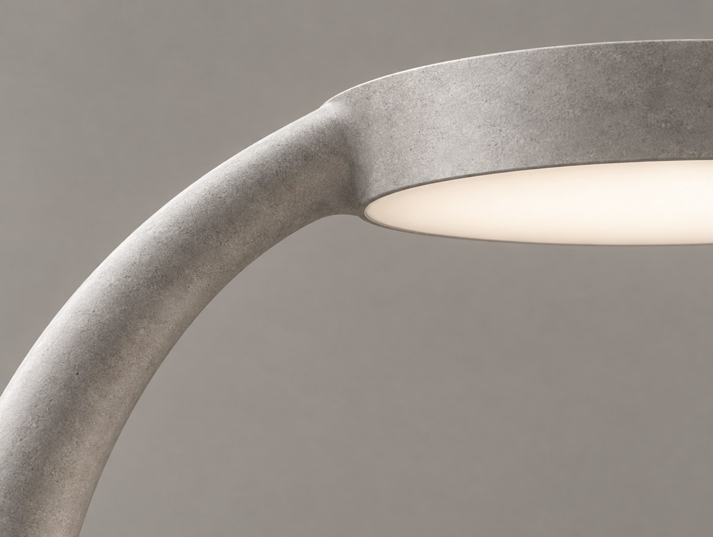

EXISTING DETAIL
기존 이미지에 보이는 디테일 확대
PROPOSED DETAIL
학생이 새롭게 설계한 디테일 구현
원본에 없는 디테일을 AI가 임의로 만들도록 하지 않습니다.
12
PART 03 — Detail Visualization
Existing Detail
ZOOM INTO THE DESIGN
→
ORIGINAL
JOINT CLOSE-UP
확대할 수 있는 기존 연결부
01
C자형 지지대와 베이스
02
지지대와 조명 헤드
03
조명 헤드의 금속 외장과 확산판
HIGGSFIELD PROMPT — JOINT CLOSE-UP
입력 이미지: 기존 램프
Create a realistic close-up view
of the existing connection
between the C-shaped support
and the horizontal circular lamp head.
Use the uploaded image
as the authoritative geometry reference.
Preserve the original connection shape,
surface finish, and proportions.
Do not invent hinges, screws,
or new mechanical components.
Neutral studio lighting.
No text or labels.
검토 기준 · 확대 이미지에서 원본의 연결 형태가 바뀌지 않았는지 확인합니다.
13
PART 03 — Detail Visualization
Sketch-guided Editing
USE THE SKETCH AS A CONSTRAINT
→
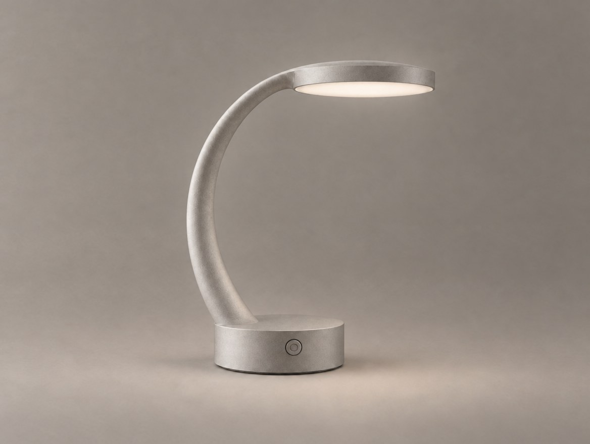
DETAIL SKETCH
BUTTON PROPOSAL
DESIGN PROPOSAL
01
기존 램프 이미지 업로드
02
버튼 위치 스케치 업로드
03
추가할 디테일 명시
04
변경하지 않을 요소 지정
05
생성 결과 비교
HIGGSFIELD PROMPT — BUTTON PROPOSAL
입력: 기존 램프 + 디테일 스케치
Use the original lamp image
as the primary product reference.
Use the additional detail sketch
to define the proposed power button.
Add only the button shown in the sketch
at the specified position
on the cylindrical base.
Preserve the original base geometry,
C-shaped support,
circular lamp head,
and overall product identity.
Do not add charging ports,
extra controls, or decorative details.
This is a proposed design refinement.
14
PART 03 — Detail Visualization
Step by Step
CHANGE ONE DETAIL AT A TIME
01 · ORIGINAL
버튼 없음
→
02 · 버튼 위치 적용
아이콘이 함께 생김
→

03 · 버튼 형태 수정
작게 · 평평하게 · 아이콘 제거
한 번에 요청
버튼 추가 + 충전 포트 추가 + 연결부 수정 + 소재 변경
단계별 요청
① 버튼 위치 적용 ② 버튼 형태 수정
③ 충전 포트 적용 ④ 소재 경계 확인
변경 범위를 작게 나누면 어떤 수정이 결과에 영향을 주었는지 판단하기 쉽습니다.
15
PART 03 — Detail Visualization
Material Transition
SHOW THE MATERIAL BOUNDARY
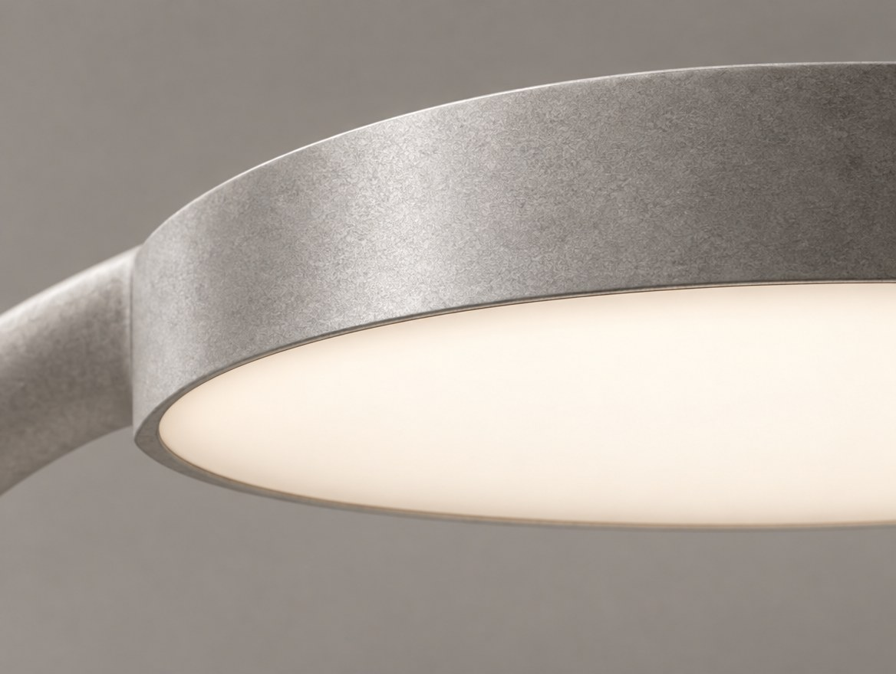
HIGGSFIELD PROMPT — MATERIAL TRANSITION
입력 이미지: 기존 램프
Create a macro close-up rendering
of the existing circular lamp head.
Focus on the visible transition
between the metal-like outer housing
and the softly illuminated diffuser beneath it.
Preserve the original head geometry,
thickness, and proportions.
Show realistic surface response
and a clean material boundary.
Do not invent new mechanical details.
No text or labels.
16
PART 03 — Detail Visualization
Detail Validation
DOES THE DETAIL MATCH THE DESIGN?
PROPOSED · 전원 버튼
01
스케치의 위치와 일치하는가?
02
크기와 형태가 적절한가?
03
원본 제품의 디자인 언어를 유지하는가?
04
다른 부품이 변경되지 않았는가?
05
사용 방식이 자연스러운가?
06
구조적으로 추가 검토가 필요한 부분은 없는가?
중요
AI 이미지가 실제 구조나 제조 가능성을 검증하는 것은 아닙니다.
17
Practice 03
Detail Visualization
오프라인에서 정의한 디테일을 AI 이미지로 구현합니다.
수행 단계
1. 기존 제품의 핵심 연결부 확대
2. 오프라인 디테일 스케치 선택
3. 스케치 기반 디테일 구현
4. 추가 디테일 1개 구현
5. 원본과 비교하여 불필요한 변경 수정
결과물
Detail Close-up 3종
완료 기준
학생이 설계한 디테일이
반영되어 있고,
제품의 기본 형태가
유지되어야 합니다.
18
PART 04 — Multi-view & Consistency
Multiple Views
SAME PRODUCT. DIFFERENT VIEWS.
ORIGINAL

FRONT · SIDE · REAR · TOP
필요한 시점 · Front View · Side View · Rear View · Three-quarter View
카메라 시점은 바뀌어도 제품의 디자인은 바뀌면 안 됩니다.
19
PART 04 — Multi-view & Consistency
Why AI Changes the Product
THE CONSISTENCY PROBLEM

A · 헤드 두께
B · 지지대 곡률
C · 베이스 비율
01
지지대 곡률 변경
02
베이스 비율 변경
03
조명 헤드 두께 변경
04
연결부 위치 변경
05
버튼 위치 불일치
06
소재와 마감 변경
강사 질문
"이 이미지들은 정말 같은 제품일까요?"
20
PART 04 — Multi-view & Consistency
Reference-based Views
CONTROL THE CAMERA, KEEP THE PRODUCT
APPROVED PRODUCT
최종 CMF + 승인된 디테일
+
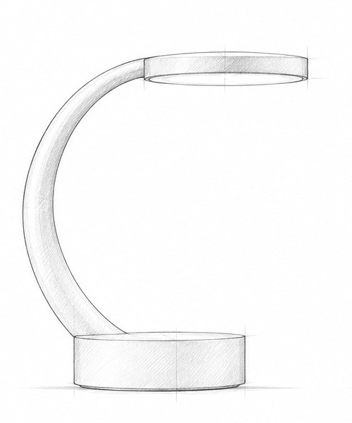
VIEW SKETCH
오프라인 시점 스케치
→

NEW VIEW
같은 제품, 다른 카메라
CHANGE
Camera viewpoint
KEEP
Product geometry, proportions, materials, components
REFERENCE
Original product + view sketch
시점 변경은 새로운 제품 생성이 아닙니다.
21
PART 04 — Multi-view & Consistency
Front View
GENERATE THE FRONT VIEW
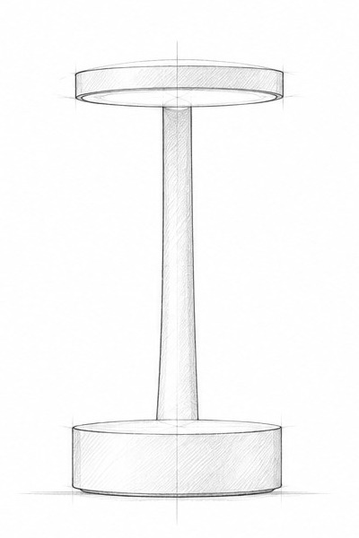
SKETCH
→

FRONT VIEW
기존 램프 이미지와 오프라인에서 작성한 정면 스케치를 함께 사용합니다.
검토 기준 정면 실루엣 · 헤드와 베이스의 정렬 · 지지대의 위치 · 부품별 CMF
HIGGSFIELD PROMPT — FRONT VIEW
입력: 승인된 제품 이미지 + front-view 스케치
Create a front-view product visualization
of the exact lamp shown
in the uploaded reference image.
Use the additional front-view sketch
to define the intended silhouette
and component arrangement.
Preserve the original product identity,
C-shaped support,
cylindrical base,
thin circular lamp head,
and approved CMF.
Do not invent new components.
Neutral studio background,
clear product presentation.
22
PART 04 — Multi-view & Consistency
Side View
GENERATE THE SIDE VIEW
SKETCH
→
SIDE VIEW
측면 스케치를 사용하여 제품의 깊이와 곡률을 정의합니다.
검토 기준 지지대의 깊이 · 헤드 두께 · 베이스 비율 · 전체적인 형태
HIGGSFIELD PROMPT — SIDE VIEW
입력: 승인된 제품 이미지 + side-view 스케치
Create a side-view visualization
of the exact lamp shown
in the uploaded reference image.
Use the additional side-view sketch
to define the geometry not visible
in the original image.
Preserve the cylindrical base,
C-shaped curved support,
thin circular lamp head,
and approved CMF.
Maintain consistent proportions
and component relationships.
Do not invent additional components.
Neutral studio background.
23
PART 04 — Multi-view & Consistency
Rear View
GENERATE THE REAR VIEW
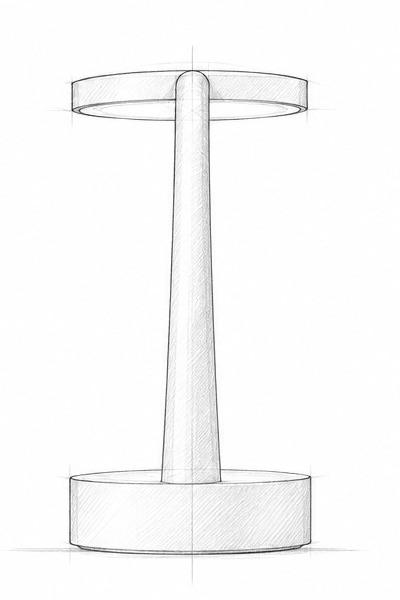
SKETCH
→
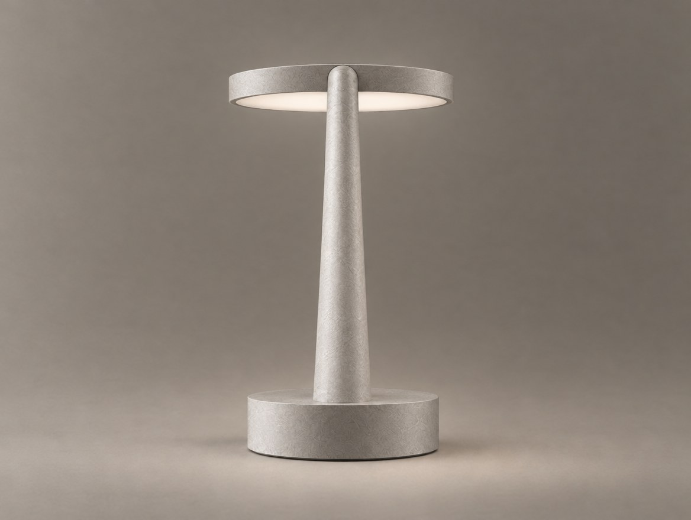
REAR VIEW
원본에서 보이지 않는 후면 구조는 오프라인에서 작성한 스케치를 기준으로 합니다.
검토 기준 후면 스케치와 일치하는가? · 부품 구성과 비율이 유지되는가? · 원본에 없던 요소가 임의로 추가되지 않았는가?
HIGGSFIELD PROMPT — REAR VIEW
입력: 승인된 제품 이미지 + rear-view 스케치
Create a rear-view product visualization
of the exact lamp shown
in the uploaded reference image.
Use the additional rear-view sketch
as the primary reference
for hidden geometry and rear details.
Preserve the original product identity,
approved CMF,
component proportions,
and overall design language.
Do not invent charging ports,
buttons, seams, or other details
not specified in the sketch.
Neutral studio background.
24
PART 04 — Multi-view & Consistency
Consistency Review
CHECK THE SAME PRODUCT
FRONT
SIDE
REAR

REAR 불일치 · 지지대가 아래로 갈수록 두꺼워짐
1차 공통 수정 프롬프트로는 거의 변화 없음
→ 2차: 고칠 부분과 이미지 역할을 명시해 불일치한 이미지만 수정
REAR · CORRECTED
01 FORM
실루엣과 비율
02 COMPONENTS
부품 개수와 위치
03 DETAILS
버튼과 연결부
04 CMF
색상·소재·마감
05 DESIGN LANGUAGE
곡률과 형태
HIGGSFIELD PROMPT — CONSISTENCY CORRECTION
입력: 수정할 시점 이미지 + 기존 램프 + 해당 시점 스케치
Correct the uploaded product view
using the original lamp image
and the approved view sketch.
Restore the original product identity,
component proportions,
C-shaped support geometry,
and circular lamp head design.
Keep the approved camera viewpoint.
Preserve the final CMF and approved details.
Remove any unintended changes
or invented components.
2차 수정 — 추가한 문장
Image 1 is the current rear view.
Image 2 is the approved design.
Image 3 is the approved front view.
The support in image 1 tapers and becomes
too thick near the base. Correct only the support
so it keeps the same slim, uniform thickness.
25
Practice 04
Multi-view
같은 제품을 세 시점에서 일관되게 표현합니다.
수행 단계
1. Front View 생성
2. Side View 생성
3. Rear View 생성
4. 세 이미지 비교
5. 형태·부품·CMF 불일치 표시
6. 가장 큰 불일치 1~2개 수정
7. 최종 Multi-view Set 정리
결과물
Front / Side / Rear
+ Consistency Review
완료 기준
세 이미지가 동일한 제품을
표현하고 있어야 합니다.
AI 생성 Multi-view는 시각적 검토 자료이며, 제조용 도면으로 사용하지 않습니다.
26
PART 05 — Hero Rendering
Design vs. Presentation
DESIGN IS FIXED. PRESENTATION CAN CHANGE.

PRODUCT DESIGN
Form
Proportion
CMF
Detail
고정 · 확정됨
VISUAL PRESENTATION
Camera
Lighting
Background
Composition
조절 가능
제품의 디자인을 유지하면서 이미지의 전달력을 높입니다.
27
PART 05 — Hero Rendering
Hero Image Direction
MAKE THE DESIGN CLEAR
좋은 Hero Image · 전체 실루엣이 잘 보임 · 핵심 디자인 특징이 드러남 · 소재와 마감이 자연스러움 · 비율이 왜곡되지 않음 · 배경과 조명이 제품을 방해하지 않음
HIGGSFIELD PROMPT — HERO IMAGE
입력: 최종 CMF와 디테일이 반영된 제품 이미지
Create a premium industrial design
hero rendering of the exact lamp
shown in the uploaded reference.
Preserve the approved product geometry,
C-shaped support,
cylindrical base,
thin horizontal circular lamp head,
final CMF,
and approved details.
Use a refined three-quarter product view.
Soft diffused studio lighting,
subtle rim lighting,
neutral warm gray background,
realistic contact shadow.
Show the full product silhouette clearly.
Do not redesign the product.
Do not add props, extra components,
branding, or text.
28
Practice 05
Hero Rendering
제품의 디자인을 유지한 최종 대표 이미지를 만듭니다.
수행 단계
1. 최종 CMF 이미지 선택
2. 승인된 디테일이 반영되었는지 확인
3. Hero Image 생성
4. 소재·조명·구도 검토
5. 제품 형태가 바뀐 부분 수정
6. 최종 대표 이미지 선정
결과물
Final Hero Image
완료 기준
제품의 디자인 정체성을
유지하면서 형태와 CMF를
명확하게 전달해야 합니다.
29
PART 06 — Final Review & Submission
Final Deliverable
DOCUMENT THE VISUALIZATION
06 HERO IMAGE
01 MASTER
02 FINAL CMF
03 DETAIL CLOSE-UP
04 MULTI-VIEW
05 CONSISTENCY REVIEW
→
후면 지지대 두께 불일치 → 수정
07 REMAINING ISSUES
· 버튼의 실제 크기와 누름 방식
· 충전 방식과 후면 디테일 미결정
· 지지대–베이스 결합 구조
· 실제 치수·구조·제조 가능성
AI 이미지로 확인할 수 없는 항목은 추가 검토 필요로 남깁니다.
모든 이미지가 하나의 제품으로 보이도록 구성합니다. 라벨과 표시는 보드 편집 단계에서 추가합니다.
30
PART 06 — Final Review & Submission
Final Quality Check
IS IT STILL THE SAME PRODUCT?
01
원본의 핵심 실루엣이 유지되었는가?
02
CMF가 설계 의도대로 적용되었는가?
03
디테일 스케치가 정확하게 반영되었는가?
04
시점별 형태와 부품 구성이 일관적인가?
05
AI가 임의로 추가한 요소는 없는가?
06
Hero Image가 제품의 특징을 명확하게 보여주는가?
07
아직 검토가 필요한 부분은 무엇인가?
학생 실습
자신의 Product Visualization Board를 최종 검토합니다.
31
NEXT · WEEK 04
NEXT — FROM PRODUCT TO EXPERIENCE
이번 주에는 제품 자체를 시각화했습니다. 다음 주에는 이 제품이 실제로 어떻게 사용되는지 보여줍니다.
01
USER SCENARIO
누가, 언제, 어디서
02
PRODUCT INTERACTION
켜고 · 조절하고 · 끄는 순간
03
STORYBOARD
장면 단위로 구성
04
IMAGE-TO-VIDEO
정지 이미지를 영상으로
05
PRODUCT MOTION
제품의 움직임과 빛
예시 · 사용자가 램프를 책상 위에 놓고 조명을 켜는 장면을 스토리보드로 구성하고, Higgsfield로 제품 사용 장면과 영상으로 확장합니다.
One product.
Consistent design.
Multiple perspectives.
32